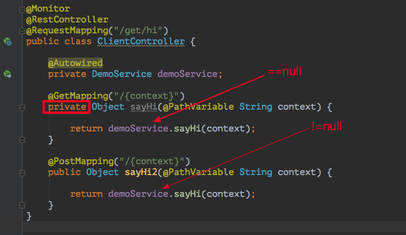

Controller类当中一个方法，使用了private声明，然后对应前端请求到达之后，方法中被注进来的bean为null，但是调用其他public方法没有问题….
1 问题引出
某日下午，从小伙伴那里得知一个略显诡异的bug，Controller类当中一个方法，使用了private声明，然后对应前端请求到达之后，方法中被注进来的bean为null，但是调用其他public方法没有问题….
搭了个demo来复现问题，代码大致如下，由于小伙伴的代码不方便展示，所以这里作了简化修改，但还是复现了问题：
问题如上图，当请求GET /get/hi/hello 时，执行对应的handlersayHi方法时报了NPE；但是诡异的是请求POST /get/hi/hello ，执行sayHi2时，没有任何问题….
2 问题排查
首先结合现象思考一下，代码已经执行到了ClientController类的方法体里面，所以URL对应的handler是找到了，当执行到demoService.sayHi()时，才报了空指针。首先想到是ClientController中：
1 |
|
DemoService没有被注进来。但如果是这样的话，那么执行sayHi2的时候也应该报NPE才对。事实上通过debug，查看ClientController中的private DemoService demoService属性是有值的，并不是null
好吧，只能debug一把了，入口自然是熟悉的org.springframework.web.servlet.DispatcherServlet#doService：
先在postman中执行一个 GET请求：localhost:8080/get/hi/23
中间步骤我们就省略了，直接来到关键代码处java.lang.reflect.Method#invoke，在多次反射调用后，终于看到处理localhost:8080/get/hi/23对应的handler：
- 图中1处return语句是我们熟悉的反射调用，这里的
ma就是GET /get/hi/hello对应的handler - 先看图中3处，请求的参数是“23”，和预期一致
- 再看图中4处，这里很清楚可以看到找到了
handler：
class com.example.kindsdemo.controller.ClientController 类的private Object ClientController.sayHi(java.lang.String)方法
直到这里好像没有发现什么问题，一切都和预期一致
- 关键看图中2处，
method反射调用执行时，使用的类是：ClientController$$EnhancerBySpringCGLIB$$715a2388。这个类光看名字就知道它不正经，实际上这表名，此处从IoC容器中拿到的是一个代理类，并且是CGLIB代理生成的类
3 为什么会被代理
那么问题来了，我们知道，Spring IoC容器中管理的bean，只有在有需要的时候才会生成代理类(主要是在AbstractAutoProxyCreator#wrapIfNecessary做相关操作，包括选择JDK还是CGLIB做代理，不在本文讨论了)。
我们又知道RestController注解是组合了@Controller和@ResponseBody，而@Controller又组合了@Component注解。被@Component注解的类，会被Spring扫描并管理成Spring容器中的bean。那显然RestController注解并不需要被AOP增强或拦截。
然而细心的朋友可能已经发现，上面demo中的ClientController类中有一个@Monitor注解
原来在小伙伴的工程中，自定义了一个注解@Monitor，在pom文件中引入了spring-boot-starter-aop模块，在一个Configuration配置类中开启了@EnableAspectJAutoProxy注解，并写了一个切面类来拦截使用了@Monitor注解的类中的方法，这才导致ClientController类被Spring Aop代理
4 为什么抛空指针异常
那么问题又来了，既然在Spring IoC容器中，ClientController被代理成了ClientController$$EnhancerBySpringCGLIB$$715a2388，那为什么调用sayHi方法会抛NPE，而sayHi2方法却不会呢？按道理说既然是同一个类的实例访问类的属性demoService，那应该同时抛出NPE才对，从开始排查问题到目前，也没有发现Spring Aop中哪里有对目标类的private方法和public方法做过特殊处理啊…
好吧，追根溯源，把动态生成的ClientController$$EnhancerBySpringCGLIB$$715a2388类扒出来看看。由于该类是运行期动态生成，所以没有class文件生成在目录下，这里推荐使用阿里巴巴开源排查问题的工具Arthas，使用其jad命令即可方便获取到代理类。
下面我们来看下这个ClientController$$EnhancerBySpringCGLIB$$715a2388长什么样，由于CGLIB生成的类代码量略大，去掉一些内容，我们先来看看可以正常执行的sayHi2方法：
1 | public class ClientController$$EnhancerBySpringCGLIB$$715a2388 |
可以看到该类继承了ClientController类，然后实现了关于aop和代理的3个接口，这里就不展开讨论了。在sayHi2中，可以看到Spring AOP(CGLIB)的方法拦截器MethodInterceptor实例，在调用sayHi2方法时，会在methodInterceptor.intercept(..)中执行真实的方法逻辑代码，那这里看不出什么问题，一切都很正常
接下来我们来看下执行有问题的sayHi方法，在ClientController$$EnhancerBySpringCGLIB$$715a2388类中一搜，emmm….找不到sayHi方法 ？等等..哦…恍然大悟，突然回过神来：sayHi是private方法，CGLIB的代理思路是给目标类生成一个子类，在子类中进行增强操作。所CGLIB最无奈两样东西，一个是final，一个就是private了…
5 总结
那么到这里就清晰明了了，我们可以总结一下，在CGLIB代理的类中，无法继承目标类的private方法，所以在执行反射调用的时候(本文对应就是前端发起GET请求，执行URL对应的handler方法)，拿到的syaHi方法，其实是父类(ClientController)的方法，而不是代理类的syaHi方法，然而父类中的属性(demoService)并没有初始化，所以用到的时候就报了NPE。
这也就解释了为什么sayHi2方法不会报NPE，而sayHi方法会报NPE。本质上是一个拿到了代理类的方法，走了代理；另一个拿到的其实是父类的方法，造成NPE。
回到问题最初，其实本文标题和问题的根源并不相符，和@Controller注解无关，所以在一开始搭建demo工程的时候，没有注意到自定义的Monitor注解，搭的demo工程运行的很好，无法复现问题，在反复调试了demo工程和小伙伴有问题的工程代码后，才找到了差别，注意到原来是CGLIB代理造成的，至此问题根源明白~